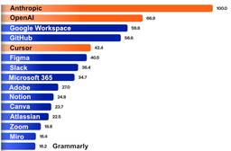
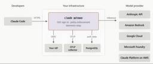
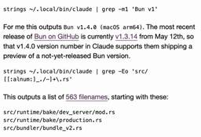

my-tech-blog-rss
企業のテックブログの更新をまとめた
RSSフィードを配信しています
コピー
Slackに貼り付けると更新を受け取ることができます
RSS URL
コピー
ALL
Zenn
Qiita
はてブ
Menthas
Publickey
InfoQ
Think IT
ITmedia
TechCrunch
Hacker News
DevelopersIO
企業テックブログ
AI情報
国内テックブログ
AI
Engineering
Platform
Programming
Database
AWS
Google Cloud
Azure
セキュリティ
Security Advisory
Speaker Deck
技術書
人気フィード
ブログ一覧
Publickeyの直近1週間の更新
7/24 (金)
.NET MAUI、iOS/AndoridのランタイムがMonoからCoreCLRに更新、開発者は動作確認を。.NET 11 Preview 6が公開
1
Publickey
マイクロソフトは今秋リリース予定の包括的フレームワーク「Microsoft .NET」のプレビュー版となる「Microsoft .NET 11 Preview 6」（以下、.NET Preview 6）を公開しました。 .NET 11 Pr...
1日前
7/23 (木)
アトラシアン、JiraがAIによる要件定義の自動作成、コンテキストを保持しつつタスクをClaudeやCopilotなどのAIエージェントへアサインなど新機能
30
Publickey
アトラシアンは、プロジェクト管理ツールとして知られるJiraに生成AI機能を組み込み、AIによる要件定義の自動作成、作業すべきタスクの洗い出し、そして各タスクをClaude CodeやGitHub Copilotなどへ割り当てる新機能を発表...
2日前
7/21 (火)

企業向けでAIツールで成長率トップはAnthropic、アカウント数が最も多いのはMicrosoft 365。Oktaが調査結果を発表
58
Publickey
アイデンティティ管理サービスを提供するOktaは、同社のサービスを用いている2万社以上の匿名化されたアクセスデータに基づく、企業でのAIツール利用実態について調査結果を発表しました。 成長率トップはAnthropic 1つ目の調査結果は、2...
3日前
AWS、デプロイ速度が最大4倍になる「AWS CloudFormation Expressモード」を提供開始
19
Publickey
Amazon Web Services（AWS）は、デプロイ速度が最大で4倍速になるAWS CloudFormationの新機能「AWS CloudFormation Expressモード」の提供を開始しました。 AWS CloudForm...
3日前

Claude Codeを組織一括でシングルサインオン、チームや個人の費用上限設定、デフォルト設定など可能に、「Claude apps gateway for AWS/Google Cloud」登場
73
Publickey
AnthropicのAIコーディングエージェントClaud Codeは非常に人気のあるサービスとして多くの組織で採用され始めています。 Claude Codeは個人で簡単に導入できますが、企業が組織としてClaude Codeを導入する場合...
4日前

Rustで書き直されたBun、早くもClaude Codeアプリに本番投入された模様
26
Publickey
Claude Codeを用いてわずか11日間でZig言語からRust言語へ移植されたことが話題となっているJavaScriptランタイムのBunですが、そのRust版Bunが早くも7月17日にリリースされたClaude Code v2.1....
4日前